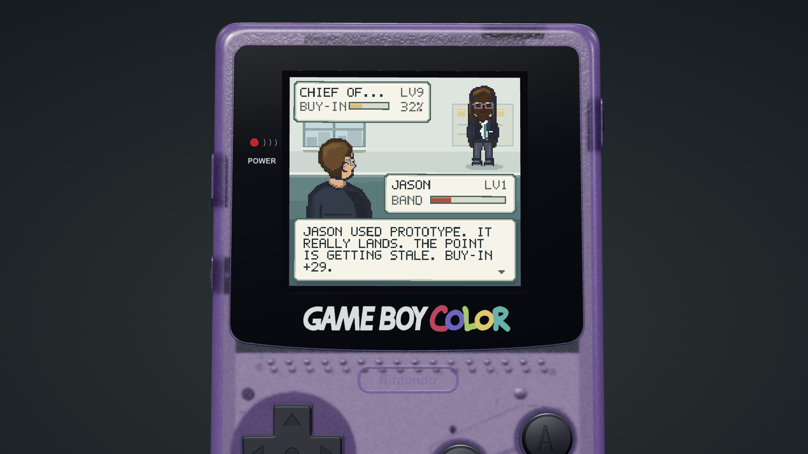
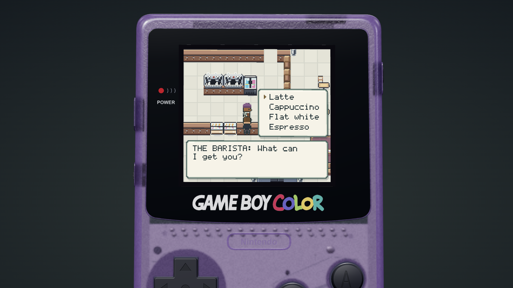
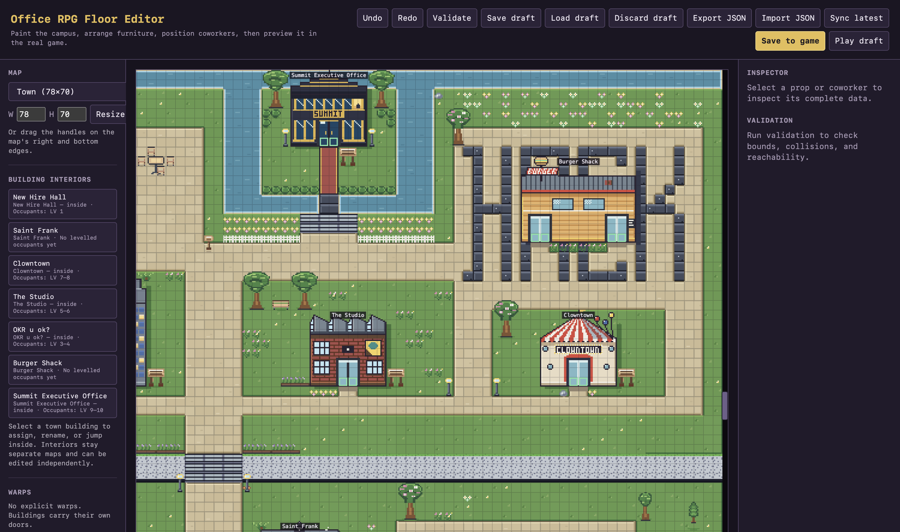

Pixélmon
Play the gameI built Pixélmon over the course of a month. It was a fun project because it evolved so much from the initial version. The goal was to continue learning and thinking about game development.
Gameplay
The game gives you a mini village to explore. There are different buildings to enter where you can get buy-in from designers, product managers, and engineers...or grab a coffee or burger.
Game mechanics
Each function has unique moves. The objective is to get buy-in from everyone, including the CEO. It's not really how work...works, but it felt like an entertaining simplification.

Coffee breaks
I wanted to add some fun easter eggs in the game. The first one I knew I needed was Saint Frank, which is a coffee shop at Meta HQ.

Building the world
In a world where AI can one shot everything, I took great joy in using AI to instead build tools that allowed me to manually create what I wanted. For example, here is the map editor tool, which let me place everything on the map by hand.
